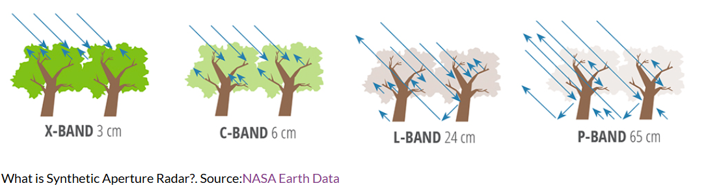

9 Synthetic Aperture Radar
9.1 Summary
This week, we explored SAR data which I found to be quite different from optical sensors. First of all, SAR is an active sensor (so far all of them have been passive), which means that it emits a signal (like a bat) and measures the reflected signal. Also, unlike optical imagery, this one produces black and white images, ranging only from low to high values of the amplitude of the signal reached by the sensor, making it more about texture than color.
Similarly to optimal imagery, it has multiple bands, each one being the result of different frequencies of microwaves. Some of these frequencies could even penetrate through thin canopies and atmospheric occlusions like clouds, but offer lower resolution. These are some of the bands:
C band: The most useful and used SAR band (e.g. Sentinel 1). Has a good balance of resolution and penetration and generates volume scattering
X band: Has a shorter wavelength so it’s very easy to scatter meanign it just bounces and generates a rough surface
L band and P band: Has a longer wavelength. It can penetrate through some objects and generate double bounce scattering

SAR also has polarizations, which is the orientation of the plane in which the waves move. Meanwhile, objects have a scattering mechanism, which is the way that objects reflects the radar signal. Scattering mechanisms are a really important dimension in SAR, analogous to the color of images in optical imagery. Their types can be:
Polarization:
VV (Vertical-Vertical): Sensitive to rough surfaces and water bodies. *
VH (Vertical-Horizontal): Detects volume scattering from vegetation. *
HH (Horizontal-Horizontal): Picks up double-bounce reflections, often seen in urban areas.
Scattering mechanisms:
Rough surface scattering – Common in open terrain, chaotic reflections. Very visible in VV polarization
Volume scattering – Occurs in vegetation or complex surfaces. Mostly sensitive in VH polarization
Double bounce scattering – Happens with vertical structures like buildings. Mostly sensitive in HH polarization
*Currently we only have access to VH and VV in Sentinel 1
The types of information we get from SAR sensor are amplitude (backscatter) and phase
- Amplitude (Backscatter): Measures the “loudness” of the returned signal, useful for texture analysis.
- Phase: Measures when is the reflected signal received. It allows us to measure distance to the ground and change detection over time, but it’s not available in Google Earth Engine (GEE).
Althought SAR is a bit less useful for classification, one of its biggest strengths is change detection. Since SAR isn’t affected by cloud cover or lighting conditions, it’s more consistent and provides a reliable way to track changes in landscapes and infrastructure. A basic approach is subtracting two SAR images to highlight differences, though this doesn’t work well in areas with constant change (e.g. construction sites). Another way of approaching it was Ollie’s research on building damage detection using SAR. His method analyzed the variance in backscatter before and after a war, identifying changes outside the normal range of variation by evaluating the standard deviation of each pixel before and after war to detect changes outside of the normal noisiness/change. It was interesting to see that his statistical change detection, even though is simpler than using other Machine Learning methods, had a better performance, but makes sense as in this case of crisis scenarios you usually don’t have pretrained data that can help calibrate ML models.
9.2 Applications
SAR has a broad range of applications, especially for monitoring environmental changes, infrastructure, and disasters. Some key uses include:
Deforestation tracking – SAR can detect forest loss even under cloud cover.
Flood monitoring – Water surfaces have a distinct SAR signature, making it useful for disaster response.
Urban development mapping – Double-bounce scattering helps identify buildings and structural changes.
Glacier and ice sheet analysis – SAR can penetrate snow and ice to monitor thickness changes.
Conflict and disaster damage assessment – As seen in Ollie’s work, SAR can detect structural damage in war zones or after natural disasters.
One area that really caught my interest is hydrology. I’ve previously analyzed river changes over time and noticed seasonal variations. SAR could provide a new way to study this, potentially detecting flood patterns and long-term riverbed shifts. However, this would likely require phase data, which isn’t available in GEE, so I’d have to explore other tools.
9.3 Reflections
This week was super interesting because SAR introduces a completely different way of analyzing Earth’s surface compared to optical imagery. Before coming to UCL, I hadn’t even heard of SAR, so it’s exciting to dive into something new and realize how useful it is.
One thing that stood out(also aligned with one of my reflections weeks ago) was how more complex models aren’t always better. Ollie’s study showed that deep learning, despite all the AI hype, wasn’t the best option for detecting building damage and that his statistical approach was actually more reliable. This made me think that the best option its actually to really understand what are all the possibilities each option bring us and evaluate which makes more sense for each case depending on the available data and expected outputs, and that at the end, choosing the right tool is more important than just picking the most advanced one.
It was also great to try SAR in GEE and see how all these concepts translate into real world analysis. I quite liked the focus Ollie has on his practicals, using it to assess serious urban and social issues which makes me think that what we are learning can have a greater impact on society(something I have been trying to incorporate when deciding what to do for my dissertation as I am currently also about to present my dissertation proposal haha).